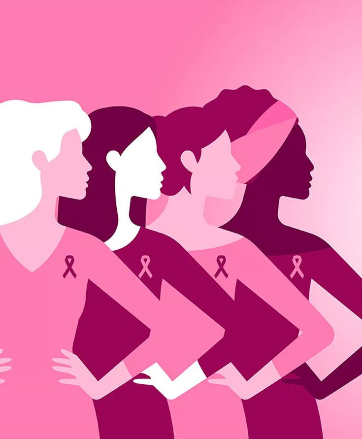

SOBRE O CÂNCER DE MAMA
O que é o câncer de mama?
O câncer de mama acontece quando células da mama passam a crescer de maneira anormal. Existem diferentes tipos da doença, e o diagnóstico deve ser realizado por profissionais de saúde.
Por que falar sobre isso?
A informação ajuda a conscientizar a população, incentiva a procura por atendimento e contribui para que as pessoas conheçam melhor a própria saúde.
Fatores de risco
- Envelhecimento;
- Histórico familiar de câncer de mama ou ovário;
- Algumas alterações genéticas hereditárias;
- Fatores hormonais e reprodutivos;
- Consumo de bebidas alcoólicas;
- Inatividade física e excesso de peso.
Quem pode desenvolver?
O câncer de mama é mais frequente em mulheres, mas também pode ocorrer em homens.
Ter fatores de risco não significa que uma pessoa necessariamente desenvolverá a doença. Pessoas sem fatores conhecidos também podem receber o diagnóstico.
Procure orientação:
converse com um profissional de saúde sobre seu histórico e os cuidados recomendados.